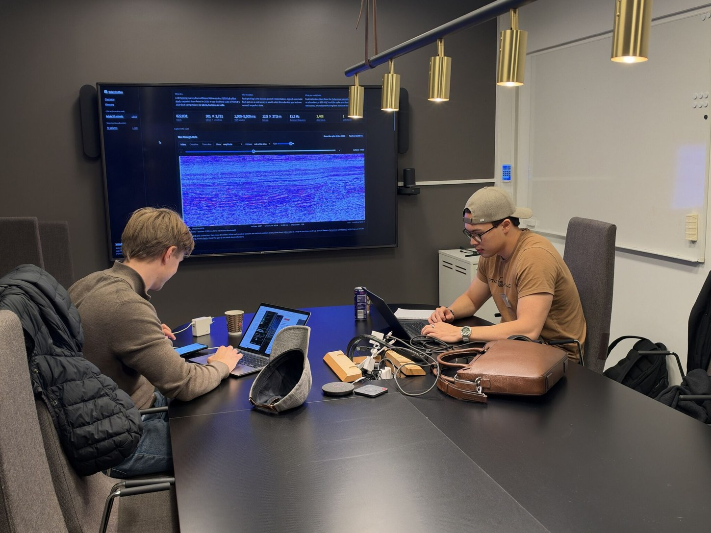

FORCE VibeCode Hackathon · Stavanger
Under
havbotnen
Kan leirstein tette ein brønn? Kor mykje olje kjem faktisk opp? Og kor nær er boret neste berglag?
Jesper Uhre Hammersvik og Fredric Hegland
19.–20. november 2026

Nature’s Plug
Kan leira tette rundt stålrøret?
Når ein brønn skal stengjast, må også spalten utanfor røret bli tett. Nokre leirsteinar kryp sakte inn mot stålet.
Vi bygde eit kart som brukar brønnloggar og trykkdata til å peike ut stader der det er verdt å leite. I ein Fram-brønn slo regelen ut over 150 samanhengande meter. Det trengst ein trykktest for å vise om leira faktisk held tett.
Sjå Fram-loggen i foredraget ↗Reserveanslag
Kor mykje olje kom faktisk opp?
Eit tidleg reserveanslag påverkar korleis eit felt blir bygd ut. Vi ville sjå kor godt slike anslag heldt når produksjonen var over.
Vi følgde norske anslag år for år og samanlikna tidlege anslag med sluttproduksjonen på 35 britiske felt. På Tartan var anslaget 202 millionar fat. Feltet gav 116 millionar.
Sjå samanlikninga i foredraget ↗Geostyring
Kor nær er sonden laggrensa?
Under boring må geologen tolke lag som ligg rundt instrumentet. Vi laga ei simulering der vi kjenner avstanden, og ein blindtest med ekte målingar frå Ekofisk.
Vi gøymde ei måling og lét modellen anslå henne. Modellen sa 6,70 Ω·m. Nabokanalane gav 6,36. Instrumentet målte 6,34. På denne djupna var det enklaste anslaget nærast. Den verkelege avstanden til laggrensa er framleis ukjend.
Prøv blindtesten i foredraget ↗